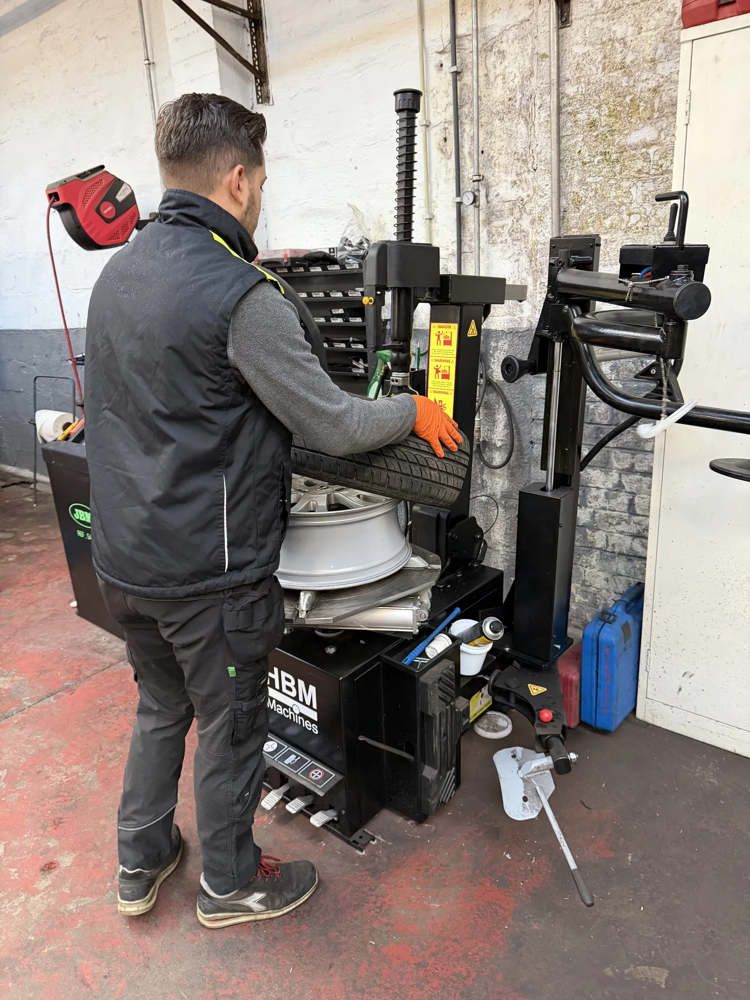
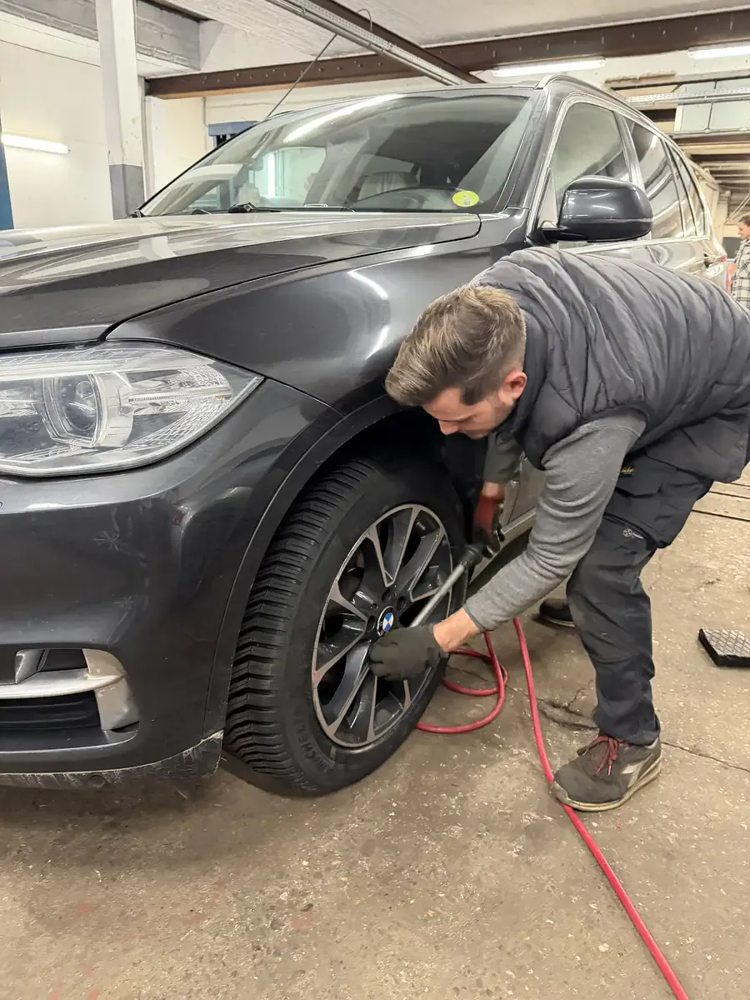
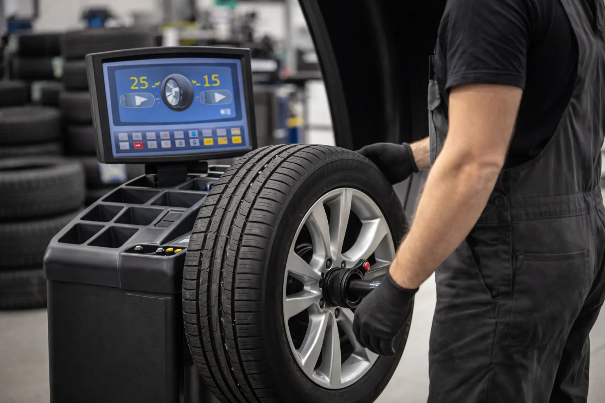
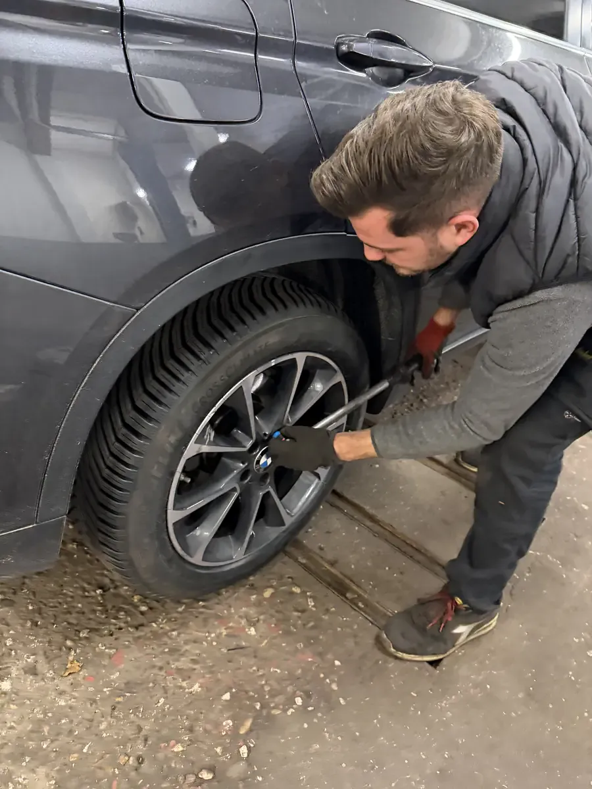
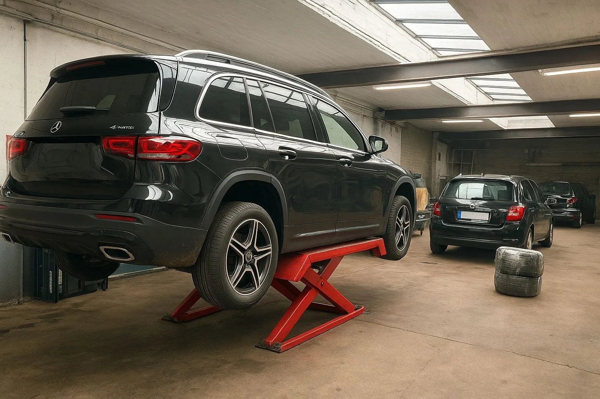

L'hiver arrive et vos pneus été sont encore montés? Ou vos pneus sont usés et il faut les changer? Chez DMT AUTOGROUP à Zaventem, on s'occupe de tout : vente de pneus toutes marques, montage, équilibrage et permutation été/hiver. Rapide, bien fait, bon prix. 15 ans d'expérience, toutes tailles de pneus, des citadines aux SUV. De winter komt eraan en uw zomerbanden zitten er nog op? Of zijn uw banden versleten en moeten ze vervangen worden? Bij DMT AUTOGROUP in Zaventem zorgen we voor alles: verkoop van banden alle merken, montage, balancering en seizoenswisseling. Snel, vakkundig en aan een goede prijs. 15 jaar ervaring, alle bandenmaten, van stadsauto's tot SUV's.
On vend des pneus de toutes les marques : Michelin, Continental, Bridgestone, Goodyear, Hankook, et aussi des marques plus accessibles pour les petits budgets. Pneus été, pneus hiver, pneus 4 saisons — on vous conseille en fonction de votre voiture et de votre usage. Si vous roulez surtout autour de Zaventem, les 4 saisons peuvent être un bon choix. Si vous faites beaucoup d'autoroute, on vous orientera plutôt vers des pneus été + hiver séparés. We verkopen banden van alle merken: Michelin, Continental, Bridgestone, Goodyear, Hankook, en ook meer betaalbare merken. Zomerbanden, winterbanden, 4-seizoenenbanden — we adviseren u op basis van uw auto en uw gebruik. Rijdt u vooral rond Zaventem? Dan kunnen 4-seizoenenbanden een goede keuze zijn. Rijdt u veel op de snelweg? Dan raden we aparte zomer- en winterbanden aan.
Beaucoup de gens pensent qu'il faut mettre des Michelin à 150 euros le pneu. Pour la plupart des voitures, un bon Hankook ou Continental à 80-90 euros fait exactement le même boulot. Pour les budgets serrés, on propose aussi des marques comme Nexen, Barum ou Firestone qui offrent un bon rapport qualité-prix. On commande vos pneus en 24 à 48 heures. Veel mensen denken dat je per se Michelin van 150 euro per band moet monteren. Voor de meeste auto's doet een goede Hankook of Continental van 80-90 euro precies hetzelfde werk. Voor een kleiner budget bieden we ook merken zoals Nexen, Barum of Firestone met een goede prijs-kwaliteitverhouding. We bestellen uw banden binnen 24 tot 48 uur.
Le climat belge est humide et variable. C'est pourquoi on recommande des pneus avec un bon indice d'adhérence sur sol mouillé. Et si vos jantes ont des éraflures de trottoir, notre atelier de carrosserie peut les remettre en état. On vous explique aussi la différence entre les indices de vitesse et de charge — un pneu avec le bon indice, c'est plus de sécurité sur la E40 comme sur les petites routes. Het Belgische klimaat is vochtig en wisselvallig. Daarom raden we banden aan met een goede grip op nat wegdek. Hebben uw velgen stoeprandschade? Ons carrosserie-atelier kan ze herstellen. We leggen ook het verschil uit tussen snelheids- en belastingsindexen — een band met de juiste index betekent meer veiligheid op de E40 en op de kleinere wegen.
Chaque pneu qu'on vend est neuf et aux normes européennes. Pas de pneus d'occasion, pas de stocks vieux de trois ans. Vous repartez avec des pneus frais, montés et équilibrés le jour même. Elke band die we verkopen is nieuw en voldoet aan de Europese normen. Geen tweedehandsbanden, geen voorraden van drie jaar oud. U vertrekt met verse banden, gemonteerd en gebalanceerd op dezelfde dag.
Notre machine à pneus professionnelle JBM monte vos pneus en quelques minutes, sans abîmer vos jantes — même les jantes alu fragiles. On vérifie aussi l'état des valves et on contrôle la pression. Le montage de 4 pneus prend entre 30 et 45 minutes. Lors du montage, on en profite pour vérifier l'état de vos freins et plaquettes — c'est le moment idéal car la roue est déjà démontée. Onze professionele JBM bandenmachine monteert uw banden in enkele minuten, zonder uw velgen te beschadigen — zelfs kwetsbare aluminium velgen. We controleren ook de staat van de ventielen en de bandenspanning. De montage van 4 banden duurt tussen 30 en 45 minuten. Tijdens de montage controleren we ook de staat van uw remmen en remblokken — het ideale moment want het wiel is al gedemonteerd.
Chez les grandes chaînes, on vous facture 50 euros par pneu juste pour le montage. Chez nous, c'est beaucoup moins — et c'est fait par un mécanicien, pas un stagiaire. On utilise une démonteuse avec bras basculant pour protéger les jantes alu, et une équilibreuse électronique pour un résultat précis au gramme près. Bij de grote ketens rekenen ze 50 euro per band alleen voor de montage. Bij ons is dat veel minder — en het wordt gedaan door een monteur, niet door een stagiair. We gebruiken een demonteerder met zwenkarm om aluvelgen te beschermen, en een elektronische balanceermachine voor een resultaat dat tot op de gram nauwkeurig is.
On remplace aussi les valves si elles sont usées — c'est un petit détail qui évite les crevaisons lentes. Avant de reposer la roue, on nettoie la surface de contact entre le moyeu et la jante. On serre toutes les roues au couple recommandé par le constructeur avec une clé dynamométrique. C'est un détail qui compte pour la sécurité. We vervangen ook de ventielen als ze versleten zijn — een klein detail dat langzame lekken voorkomt. Voor we het wiel terugplaatsen, reinigen we het contactoppervlak tussen naaf en velg. We draaien alle wielen aan met het door de fabrikant aanbevolen koppel met een momentsleutel. Dat is een detail dat telt voor de veiligheid.


Des vibrations dans le volant à 100 km/h? C'est souvent un problème d'équilibrage. Après chaque montage, on équilibre vos roues pour un confort de conduite optimal. C'est rapide, c'est inclus dans notre service pneus, et ça fait une grosse différence sur la route. Trillingen in het stuur bij 100 km/u? Dat is vaak een balanceringsprobleem. Na elke montage balanceren we uw wielen voor optimaal rijcomfort. Het is snel, het zit inbegrepen in onze bandenservice, en het maakt een groot verschil op de weg.
Un pneu mal équilibré s'use de manière irrégulière. Vous verrez des zones plus lisses d'un côté que de l'autre. Ça réduit la durée de vie du pneu et ça augmente la consommation de carburant. L'équilibrage protège aussi vos roulements de roue et votre suspension — sans ça, ces pièces s'usent plus vite et les réparations coûtent bien plus cher. Een slecht gebalanceerde band slijt ongelijkmatig. U ziet dan gladde zones aan één kant. Dat verkort de levensduur van de band en verhoogt het brandstofverbruik. Balancering beschermt ook uw wiellagers en ophanging — zonder balancering slijten deze onderdelen sneller en kosten de herstellingen veel meer.
Si vous sentez des vibrations après un passage chez un autre garage, venez chez nous. On rééquilibre pour vérifier si le travail a été bien fait. Un bon équilibrage, c'est aussi moins de bruit de roulement dans l'habitacle. Voelt u trillingen na een bezoek aan een andere garage? Kom dan bij ons langs. We herbalanceren om te controleren of het werk goed is gedaan. Een goede balancering betekent ook minder rolgeluid in de cabine.

Chaque année c'est la même chose : il faut passer de pneus été en pneus hiver et vice versa. Chez DMT AUTOGROUP, on fait la permutation rapidement. Amenez vos pneus ou récupérez-les chez nous. On vérifie l'usure, la pression, et on vous dit honnêtement s'il est temps de les remplacer. Elk jaar hetzelfde: van zomerbanden naar winterbanden en omgekeerd. Bij DMT AUTOGROUP doen we de bandenwissel snel. Breng uw banden mee of haal ze bij ons op. We controleren slijtage en spanning, en vertellen u eerlijk wanneer het tijd is om ze te vervangen.
En Belgique, le bon moment pour passer aux pneus hiver c'est mi-octobre. Quand la température descend sous 7°C, le caoutchouc des pneus été durcit et perd en adhérence. Pour repasser en pneus été, c'est mi-avril. La loi belge n'impose pas les pneus hiver, mais votre assurance peut poser des questions en cas d'accident sur route enneigée avec des pneus été. Profitez-en aussi pour faire votre vidange huile moteur en même temps — comme ça tout est fait en une seule visite. In België is het juiste moment om naar winterbanden over te schakelen half oktober. Wanneer de temperatuur onder 7°C daalt, wordt het rubber van zomerbanden hard en verliest het grip. Terug naar zomerbanden is half april. De Belgische wet verplicht geen winterbanden, maar uw verzekering kan vragen stellen bij een ongeval op besneeuwde wegen met zomerbanden. Profiteer ervan om tegelijk uw olieverversing te laten doen — zo is alles in één bezoek geregeld.
On propose aussi le stockage de vos pneus si vous manquez de place chez vous. On vérifie la profondeur des sculptures à chaque permutation. La limite légale en Belgique est 1,6 mm, mais on conseille de remplacer dès 3 mm pour garder une bonne accroche sous la pluie. Les routes entre Zaventem, Kraainem et la E40 sont souvent mouillées en automne — des pneus en bon état font toute la différence. We bieden ook opslag van uw banden aan als u thuis geen plaats heeft. We controleren ook de profieldiepte bij elke wissel. De wettelijke limiet in België is 1,6 mm, maar we raden aan om al bij 3 mm te vervangen voor goede grip bij regen. De wegen tussen Zaventem, Kraainem en de E40 zijn vaak nat in de herfst — banden in goede staat maken dan het verschil.


Ça dépend vraiment de votre usage. Si vous roulez surtout en ville autour de Zaventem et que vous ne partez pas au ski, les 4 saisons font très bien le boulot. Par contre, si vous faites beaucoup d'autoroute ou des longs trajets en hiver, des vrais pneus hiver + été séparés, c'est plus sûr. On vous conseille honnêtement en fonction de ce que vous faites réellement avec votre voiture. Et pensez aussi à faire vérifier vos freins avant l'hiver. Dat hangt echt af van uw gebruik. Rijdt u vooral in de stad rond Zaventem en gaat u niet op skivakantie? Dan doen 4-seizoenenbanden prima het werk. Maar als u veel op de snelweg rijdt of lange ritten maakt in de winter, zijn aparte winter- en zomerbanden veiliger. We adviseren u eerlijk op basis van wat u echt doet met uw auto. Denk er ook aan om uw remmen te laten controleren voor de winter.
Le profil n'est pas le seul critère. Le caoutchouc durcit avec le temps, même si le pneu n'est pas usé visuellement. Après 5-6 ans, l'adhérence baisse, surtout sur sol mouillé. Regardez le code DOT sur le flanc du pneu — les 4 derniers chiffres indiquent la semaine et l'année de fabrication. À 4 ans, si le profil est bon, ça va encore. Mais au-delà de 6 ans, on recommande de les remplacer. Het profiel is niet het enige criterium. Het rubber wordt harder met de tijd, zelfs als de band er visueel nog goed uitziet. Na 5-6 jaar neemt de grip af, vooral op nat wegdek. Kijk naar de DOT-code op de zijkant van de band — de laatste 4 cijfers geven de week en het jaar van productie aan. Na 4 jaar, als het profiel goed is, zit u nog veilig. Maar na 6 jaar raden we vervanging aan.
Ça varie énormément selon la taille et la marque. Pour une citadine en 195/65R15, comptez entre 280 et 400 euros tout compris (pneus + montage + équilibrage). Pour un SUV en 235/55R19, c'est plutôt 500-700 euros. Chez nous à Zaventem, le montage et l'équilibrage sont inclus dans le prix. Appelez le 0484 11 58 13 avec votre taille de pneu, on vous donne un prix exact en 2 minutes. Dat verschilt enorm naargelang de maat en het merk. Voor een stadsauto in 195/65R15, reken op 280 tot 400 euro alles inbegrepen (banden + montage + balancering). Voor een SUV in 235/55R19, is het eerder 500-700 euro. Bij ons in Zaventem zijn montage en balancering inbegrepen in de prijs. Bel 0484 11 58 13 met uw bandenmaat, we geven u een exacte prijs in 2 minuten.
Très probablement, oui. Des vibrations à partir de 80-100 km/h, c'est en général un problème d'équilibrage. Ça se règle en 20 minutes chez nous. Si les vibrations apparaissent au freinage, c'est plutôt les disques de frein qui sont voilés — ça peut aussi venir des freins, on vérifie les deux. Heel waarschijnlijk wel. Trillingen vanaf 80-100 km/u duiden meestal op een balanceringsprobleem. Dat lossen we op in 20 minuten. Als de trillingen optreden bij het remmen, zijn het eerder de remschijven die vervormd zijn — het kan ook van de remmen komen, we controleren beide.
On vend toutes les marques : Michelin, Continental, Bridgestone, Goodyear, Hankook, et aussi des marques plus accessibles comme Nexen, Barum ou Firestone pour les petits budgets. On vous conseille la meilleure option selon votre voiture et votre budget — pas la marque qui nous rapporte le plus de marge. We verkopen alle merken: Michelin, Continental, Bridgestone, Goodyear, Hankook, en ook meer betaalbare merken zoals Nexen, Barum of Firestone. We adviseren u de beste optie op basis van uw auto en uw budget — niet het merk dat ons de meeste marge oplevert.
Lundi — Vendredi · 08:30 — 18:00
Mechelsesteenweg 270, 1933 ZaventemMaandag — Vrijdag · 08:30 — 18:00
Mechelsesteenweg 270, 1933 Zaventem